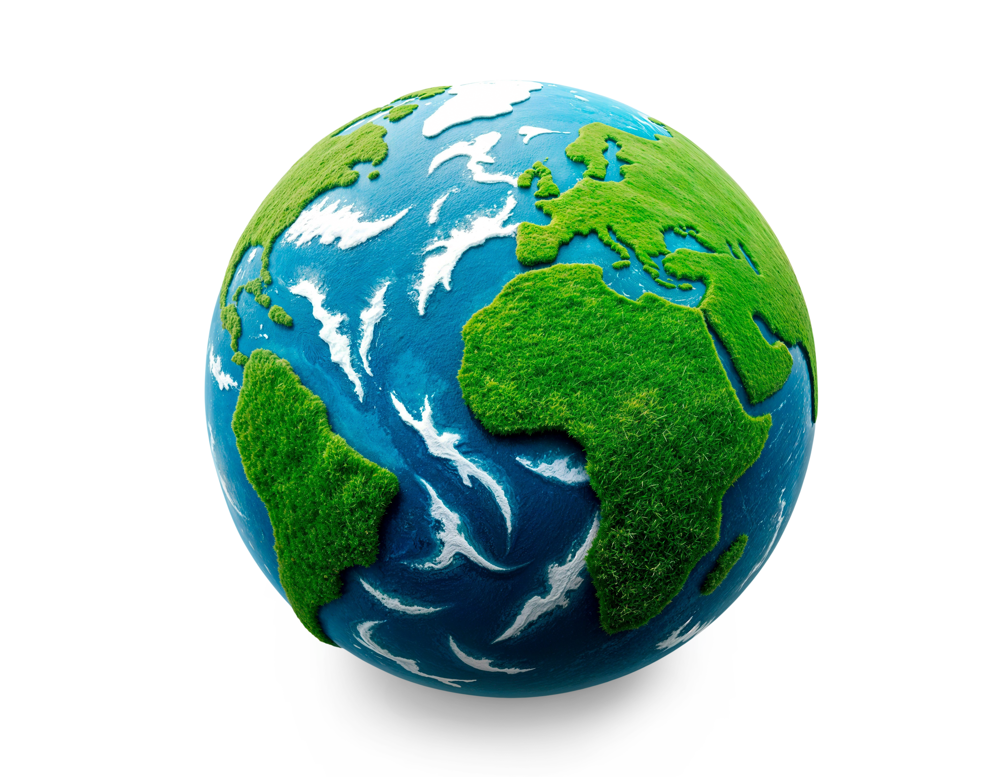

Edukasi
Membantu pengunjung memahami perubahan iklim dengan bahasa sederhana.
TENTANG PROYEK KAMI
Earth Need Us adalah website edukasi yang mengajak masyarakat memahami perubahan iklim dan mengambil tindakan sederhana untuk menjaga lingkungan. Website ini dibuat sebagai proyek UTS Pemrograman Web dengan tema SDG 13: Aksi Iklim.

🌿 🍃TUJUAN WEBSITE
Website ini bertujuan menyediakan informasi dasar mengenai perubahan iklim, menjelaskan dampaknya terhadap kehidupan, dan mendorong tindakan yang lebih ramah lingkungan dalam kehidupan sehari-hari.
Membantu pengunjung memahami perubahan iklim dengan bahasa sederhana.
Mengenalkan kebiasaan yang dapat mendukung pengurangan emisi.
Mendorong kepedulian terhadap lingkungan dan masa depan bumi.
SASARAN PENGUNJUNG
Website ini ditujukan terutama bagi pelajar dan masyarakat umum yang ingin mengenal isu perubahan iklim serta menemukan langkah sederhana untuk ikut menjaga bumi.
TIM PROYEK
Website ini dikembangkan secara berkelompok sebagai bagian dari proyek UTS Pemrograman Web. Lengkapi nama dan NIM berikut dengan data kelompok kalian.
Nama: Komang Rian Triadi
NIM: 2515091053
Nama: Putu Adhi Prajna Pratisthita
NIM: 251509105
Nama: I Kade Adi Wiraditya
NIM: 2515091019
REFERENSI
Materi edukasi dikembangkan dengan merujuk pada sumber informasi tentang iklim dari lembaga ilmiah dan resmi.
Informasi tentang pemanasan global, Proses pemanasan global, dan dampaknya di Indonesia
Kunjungi BMKG →Informasi sains tentang pemanasan global, bukti perubahan iklim, dan dampaknya.
Kunjungi NASA →Laporan ilmiah mengenai penyebab, dampak, adaptasi, dan mitigasi perubahan iklim.
Kunjungi IPCC →Informasi tentang aksi iklim dan upaya menghadapi perubahan iklim secara global.
Kunjungi PBB →Pengertian pemanasan global, Penyebab pemanasan global, dan Kampanye PBB
Kunjungi PBB Indonesia →